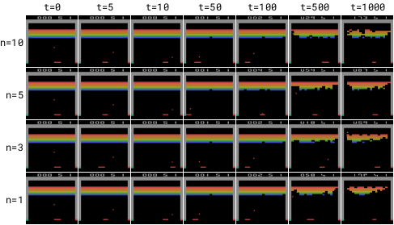
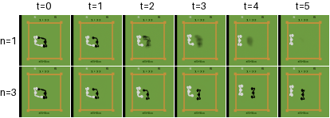
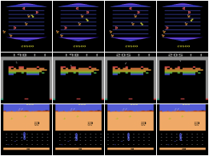
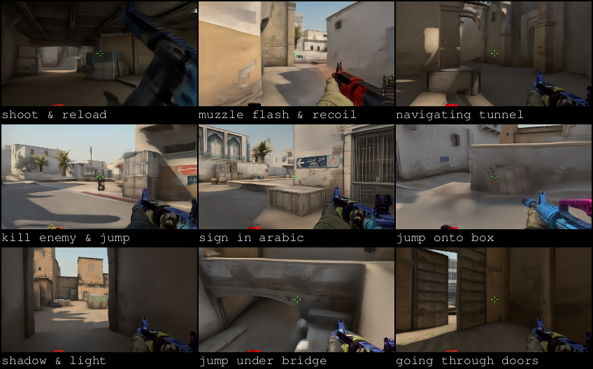

Diffusion for World Modeling: Visual Details Matter in Atari
原论文摘要 · English Abstract
World models constitute a promising approach for training reinforcement learning agents in a safe and sample-efficient manner. Recent world models predominantly operate on sequences of discrete latent variables to model environment dynamics. However, this compression into a compact discrete representation may ignore visual details that are important for reinforcement learning. Concurrently, diffusion models have become a dominant approach for image generation, challenging well-established methods modeling discrete latents. Motivated by this paradigm shift, we introduce DIAMOND (DIffusion As a Model Of eNvironment Dreams), a reinforcement learning agent trained in a diffusion world model. We analyze the key design choices that are required to make diffusion suitable for world modeling, and demonstrate how improved visual details can lead to improved agent performance. DIAMOND achieves a mean human normalized score of 1.46 on the competitive Atari 100k benchmark; a new best for agents trained entirely within a world model. We further demonstrate that DIAMOND's diffusion world model can stand alone as an interactive neural game engine by training on static Counter-Strike: Global Offensive gameplay. To foster future research on diffusion for world modeling, we release our code, agents, videos and playable world models at https://diamond-wm.github.io.
世界模型直接预测下一帧像素
建模条件分布 $p(\mathbf{x}_{t+1}\mid\mathbf{x}_{\leq t},a_{\leq t})$，跳过离散隐变量
EDM 预条件让少步去噪也稳定
训练目标随噪声水平自适应混合，$n=1$ 仍能稳定想象上千步
帧堆叠加 AdaGN 注入历史与动作
过去 $L$ 帧沿通道拼接，动作经自适应组归一化注入 U-Net
3 步 Euler 采样自回归想象
每帧调用去噪网络 $n=3$ 次，沿环境时间 $t$ 逐帧推进
想象中用 REINFORCE 训策略
策略 $\pi_{\phi}$ 只在想象里训练，真环境只用来采数据
问题与动机：离散隐变量丢掉了关键视觉细节
世界模型的经典路线是先把图像压缩成一串离散隐变量，再在隐变量上建模动力学，DreamerV2、IRIS、TWM 与 STORM 都是如此。离散化的好处是抗复合误差：每一步的预测都被拉回到有限的码本里，想象不容易越滚越偏。但代价是有损压缩——编码器在训练时并不知道哪些像素对策略重要，于是可能把决定成败的细节当作噪声扔掉。论文举的例子很直观：在自动驾驶这类任务里，远处一个红绿灯或一个行人只有几个像素，却能完全改变最优动作。
Atari 里同样如此：奖励点与敌人在画面上可能只差几个像素的颜色，Asterix 里橙色的敌人与红色的奖励一旦混淆，智能体就会去追杀敌人、躲避奖励。IRIS 的想象轨迹里恰恰出现了这种帧间不一致：同一个物体在相邻帧里在敌人与奖励之间来回跳变。对策略学习而言，这不是“画质差一点”的美学问题，而是奖励信号本身被污染了——价值函数学到的是一张时灵时不灵的地图。
与此同时，生成式视觉的范式正在转移：扩散模型在图像生成上全面挑战了离散 token 方法。它能灵活建模复杂多模态分布而不模式崩溃，又容易接受条件——这两点恰好对应世界模型的两个核心需求：对动作条件的忠实服从决定信用分配是否可靠，对未来多模态性的刻画决定想象训练场景是否多样。论文要回答的问题于是很明确：扩散模型能不能直接做世界模型？需要哪些关键设计才能让它在长时程想象中稳定、又便宜到能训练强化学习智能体？以及，视觉细节的提升是否真的会转化为策略分数？
- 离散隐变量抗复合误差，但有损压缩可能丢掉策略关键信息
- 几个像素的差别（如 Asterix 的敌人与奖励）就能污染奖励信号
- 扩散模型易条件化、能建模多模态分布，恰好匹配世界模型的需求
- Atari 100k 每局只给 10 万步，约等于 2 小时人类游戏时间
核心思想：直接在像素空间做条件扩散，把世界模型当成可交互的图像生成器
DIAMOND 不再学习隐变量上的动力学，而是直接学习条件分布 $p(\mathbf{x}_{t+1}\mid\mathbf{x}_{\leq t},a_{\leq t})$，即给定全部历史观测 $\mathbf{x}_{\leq t}$ 与历史动作 $a_{\leq t}$，预测下一帧观测 $\mathbf{x}_{t+1}$ 的像素。这里 $\mathbf{x}_{t}$ 是第 $t$ 步的图像观测，$a_{t}$ 是动作，下标 $\leq t$ 表示“截至 $t$ 的全部历史”。由于真实状态 $\mathbf{s}_{t}$ 不可观测，历史观测与动作就是对状态的近似，世界模型本质上成了一个动作条件的视频预测器。
想象过程是自回归的去噪：环境时间 $t$ 沿横轴推进，去噪时间 $\tau$ 沿纵轴从 $\mathcal{T}$ 倒流回 $0$。在每一步 $t$，模型从一个纯噪声样本 $\mathbf{x}_{t}^{\mathcal{T}}$ 出发，反复调用去噪网络 $\mathbf{D}_{\theta}$，沿 $\tau$ 减小做逆向去噪，最终得到干净的下一帧 $\mathbf{x}_{t}^{0}$；这帧画面再连同策略选出的动作 $a_{t}$ 一起，成为下一步的条件。理解这张图的关键是分清两条时间轴：$t$ 是游戏里的时间，$\tau$ 是生成一帧画面内部的去噪时间。
奖励与终止没有塞进扩散模型，而是另用一个较小的模型 $R_{\psi}$（卷积网络加 LSTM）单独预测；策略 $\pi_{\phi}$ 用带价值基线的 REINFORCE 训练，价值网络用 $\lambda$-回报的贝尔曼误差训练，整个智能体完全在想象中训练，真环境只用来采集数据。这种分工让扩散模型只专注于一件事：把下一帧画对、画稳。
- 建模对象是像素条件分布 $p(\mathbf{x}_{t+1}\mid\mathbf{x}_{\leq t},a_{\leq t})$，而非隐变量动力学
- 想象沿两条时间轴展开：环境时间 $t$ 自回归，去噪时间 $\tau$ 由 $\mathcal{T}$ 逆向走到 $0$
- 奖励与终止由独立的小模型 $R_{\psi}$ 预测，策略 $\pi_{\phi}$ 只在想象中训练
- 像素空间建模的副产品：世界模型可直接替换真环境，便于调试与观察
模型结构与关键机制：EDM 预条件、帧堆叠与动作条件
扩散范式的选择是全文最关键的设计决策。作者没有用最常见的 DDPM，而是采用 Karras 等人提出的 EDM 框架。前向扰动核取为 $p^{0\tau}(\mathbf{x}_{t+1}^{\tau}\mid\mathbf{x}_{t+1}^{0})=\mathcal{N}(\mathbf{x}_{t+1}^{\tau};\mathbf{x}_{t+1}^{0},\sigma^{2}(\tau)\mathbf{I})$，其中 $\sigma(\tau)$ 是随去噪时间 $\tau$ 变化的噪声水平，$\mathbf{I}$ 是单位矩阵。这对应漂移系数 $\mathbf{f}(\mathbf{x},\tau)=\mathbf{0}$、扩散系数 $g(\tau)=\sqrt{2\dot{\sigma}(\tau)\sigma(\tau)}$。直观说，前向过程就是不断往干净图像里加方差为 $\sigma^{2}(\tau)$ 的高斯噪声。
EDM 的核心是网络预条件。去噪网络参数化为
$$\mathbf{D}_{\theta}(\mathbf{x}_{t+1}^{\tau},y_{t}^{\tau})=c_{\text{skip}}^{\tau}\mathbf{x}_{t+1}^{\tau}+c_{\text{out}}^{\tau}\mathbf{F}_{\theta}(c_{\text{in}}^{\tau}\mathbf{x}_{t+1}^{\tau},y_{t}^{\tau})$$
其中 $y_{t}^{\tau}$ 是全部条件变量的简写，包括噪声水平编码 $c_{\text{noise}}^{\tau}$、历史观测 $\mathbf{x}^{0}_{\leq t}$ 与历史动作 $a_{\leq t}$；$\mathbf{F}_{\theta}$ 是真正的神经网络（标准 2D U-Net）；$c_{\text{in}}^{\tau}$ 与 $c_{\text{out}}^{\tau}$ 是预条件系数，作用是让网络输入与输出在任何噪声水平下都保持单位方差；而 $c_{\text{skip}}^{\tau}=\sigma_{\text{data}}^{2}/(\sigma_{\text{data}}^{2}+\sigma^{2}(\tau))$ 是跳跃连接系数，$\sigma_{\text{data}}$ 是数据分布的标准差。把上式代入训练目标后，网络 $\mathbf{F}_{\theta}$ 的训练目标会在信号与噪声之间自适应混合：噪声远大于信号时（$\sigma(\tau)\gg\sigma_{\text{data}}$，$c_{\text{skip}}^{\tau}\to 0$），目标主要是干净图像 $\mathbf{x}_{t+1}^{0}$；噪声很小时（$\sigma(\tau)\to 0$，$c_{\text{skip}}^{\tau}\to 1$），目标变成干净图像与加噪图像之差，即加入的噪声。这避免了低噪声区目标退化为平凡恒等映射的问题。训练时 $\sigma(\tau)$ 按对数正态分布采样，把训练集中在中等噪声区域。
条件注入的方式刻意保持简单：过去 $L$ 帧观测沿通道维拼接到带噪的下一帧上一起输入 U-Net，动作则通过自适应组归一化（AdaGN）注入 U-Net 残差块。作者在附录里试过更花哨的交叉注意力架构（用历史编码器加交叉注意力），结果帧堆叠反而更好——直接把历史帧“喂给”网络的归纳偏置，似乎特别适合自回归生成。这个“简单打败复杂”的结果，是论文留给后来者的一条实用经验。
- 选用 EDM 而非 DDPM：预条件让训练目标在信号与噪声间自适应混合
- 跳跃系数 $c_{\text{skip}}^{\tau}=\sigma_{\text{data}}^{2}/(\sigma_{\text{data}}^{2}+\sigma^{2}(\tau))$ 是稳定性的关键
- 2D U-Net 作 $\mathbf{F}_{\theta}$，过去 $L$ 帧沿通道拼接作为条件
- 动作经自适应组归一化（AdaGN）注入残差块；交叉注意力版反而更差

训练与推理流程：三步循环与 3 步去噪的取舍
训练目标是带条件的去噪分数匹配，写成 $L_{2}$ 重建损失就是
$$\mathcal{L}(\theta)=\mathbb{E}\left[\|\mathbf{D}_{\theta}(\mathbf{x}_{t+1}^{\tau},\tau,\mathbf{x}_{\leq t}^{0},a_{\leq t})-\mathbf{x}_{t+1}^{0}\|^{2}\right]$$
期望取自去噪时间 $\tau$、加噪后的下一帧 $\mathbf{x}_{t+1}^{\tau}$ 以及从回放数据中采到的轨迹段。做法是：从智能体已采集的数据里采样一段轨迹，按噪声水平 $\sigma(\tau)$ 给真实下一帧加噪，让网络在给定历史与动作的条件下把干净帧 $\mathbf{x}_{t+1}^{0}$ 恢复出来。注意这里的期望同时覆盖了不同的 $\tau$，模型在一次训练里学会了从各个噪声水平去噪。
推理时要解逆向随机微分方程
$$d\mathbf{x}=[\mathbf{f}(\mathbf{x},\tau)-g(\tau)^{2}\nabla_{\mathbf{x}}\log p^{\tau}(\mathbf{x})]d\tau+g(\tau)d\bar{\mathbf{w}}$$
其中 $\nabla_{\mathbf{x}}\log p^{\tau}(\mathbf{x})$ 是分数函数（对数密度的梯度），$\bar{\mathbf{w}}$ 是逆向时间维纳过程，$\mathbf{f}$ 与 $g$ 分别是前向过程的漂移与扩散系数。作者用最简单的一阶 Euler 法求解，因为高阶求解器要多花函数求值次数（NFE），而随机采样又没有带来额外好处。去噪步数 $n$ 直接决定想象成本：每预测一帧要调用网络 $n$ 次，想象一条长轨迹的成本随 $n$ 线性增长。
去噪步数默认取 $n=3$，这是定性分析与定量消融共同给出的折中。单步去噪的最优预测，本质上是对给定带噪输入下所有可能重建取期望；当后验分布是多模态时，这个期望会落在分布之外、表现为模糊图像。Boxing 就是典型例子：黑方球员的移动不可预测，单步预测在两种可能位置之间插值，球员变得模糊；多步采样则把生成推向某一个模态，图像恢复锐利。而白方球员由策略控制、动作已知，没有不确定性，单步与多步都预测正确。Breakout 这类转移接近确定性的游戏，单步就够用。完整的训练循环是：用当前策略在真环境采数据、在全部数据上更新世界模型、在更新后的世界模型里训练策略，如此往复。
- 训练是条件去噪的 $L_{2}$ 重建损失，期望覆盖全部噪声水平 $\tau$
- 推理用一阶 Euler 法解逆向 SDE，默认去噪步数 $n=3$
- 单步预测是多模态后验的期望，遇不可预测移动会模糊；多步采样收敛到某一模态
- 循环：采数据、训世界模型、想象中训策略，重复直至 10 万步预算用完

实验与结果：Atari 100k 新纪录与视觉细节的因果链
Atari 100k 基准包含 26 个游戏，每局只允许 10 万步环境交互（约 2 小时人类游戏），而无约束的 Atari 智能体通常训练 5000 万步。DIAMOND 每局用 5 个随机种子从头训练，单次运行约 12GB 显存、在一块 RTX 4090 上约 2.9 天，26 局总计约 1.03 GPU 年。结果是平均人类归一化分数（Mean HNS）1.46（表 1 均值 1.459）、四分位均值（IQM）0.64（0.641），11 个游戏超过人类水平，刷新了“完全在世界模型内训练的智能体”的纪录，对比 STORM 的 1.266、DreamerV3 的 1.097、IRIS 的 1.046。
论文把分数提升与视觉细节做了因果链条式的对照。提升最大的正是那些“小细节定胜负”的游戏：Asterix 3698.5 分（IRIS 仅 853.6、STORM 1028.0）、Breakout 132.5 分（IRIS 83.7）、Road Runner 20673.2 分（STORM 17564.0）。图 5 的并排对比显示，IRIS 想象的连续帧里敌人会变成奖励、砖块与分数帧间跳变，而 DIAMOND 的轨迹里没有这些不一致；Breakout 里破一块红砖后分数稳定地增加 7 分。由于两方法的智能体部分相似，作者把性能差主要归因于世界模型。关键是这并非靠堆算力换来的：两者渲染分辨率同为 $64\times 64$，DIAMOND 每帧只需 3 次网络前向（NFE），IRIS 需要 16 次；DIAMOND 参数量 13M，也少于 IRIS 的 30M。
同一模型脱离强化学习、单独训练也能成为神经游戏引擎。作者用 87 小时（500 万帧训练、50 万帧测试）的静态 CS:GO Dust II 人类游戏录像训练世界模型，把 U-Net 通道数放大、参数从 Atari 的 4M 扩到 381M（含 51M 的上采样器），训练 12 天，在 RTX 3090 上以 10Hz 实时运行，真人可以用键盘鼠标在里面游玩。附录的 3D 对比也支持这一点：CS:GO 上 DIAMOND 帧堆叠版的 FID 为 9.6、FVD 为 34.8，远好于 IRIS（$K=64$）的 22.8 与 85.7、DreamerV3 的 106.8 与 509.1。
- 平均 HNS 1.46、IQM 0.64，11 个游戏超人类，刷新世界模型内训练的纪录
- Asterix、Breakout、Road Runner 等细节敏感游戏提升最大，构成因果证据
- 同为 $64\times 64$ 分辨率，DIAMOND 每帧 3 NFE、13M 参数，少于 IRIS 的 16 NFE、30M 参数
- CS:GO 神经游戏引擎：87 小时静态数据训练，381M 参数，10Hz 实时可玩
实验结果 · 数据
Atari 100k 平均人类归一化分数（Mean HNS，越高越好）
| 项目 | 数值 |
|---|---|
| SimPLe | 0.332 |
| TWM | 0.956 |
| IRIS | 1.046 |
| DreamerV3 | 1.097 |
| STORM | 1.266 |
| DIAMOND | 1.459 |
注：人类水平 = 1。
Atari 100k 四分位均值（IQM，越高越好）
| 项目 | 数值 |
|---|---|
| SimPLe | 0.13 |
| TWM | 0.459 |
| IRIS | 0.501 |
| DreamerV3 | 0.497 |
| STORM | 0.636 |
| DIAMOND | 0.641 |
注：人类水平 = 1。
数字首先确认了纪录本身：DIAMOND 平均 HNS 为 1.459，超过人类水平约 46%，领先最接近的世界模型基线 STORM（1.266）约 0.19，11 个游戏超过人类玩家；但 IQM 只以 0.641 对 0.636 微弱领先 STORM，说明均值优势部分来自个别游戏的大胜，中位数游戏的提升其实有限。两张图对照着看才能避免被单一均值误导。
消融与对照实验把分数与视觉质量连在了一起：Asterix、Breakout、Road Runner 等细节敏感游戏提升最大，图 5 的帧间一致性对比提供了机制解释，而附录的定量消融显示把去噪步数从默认的 $n=3$ 降到 $n=1$ 会让智能体变差，在 Boxing 上尤其明显——与单步预测模糊的定性观察一致。附录 3D 对比也支持同一结论：CS:GO 上 DIAMOND 帧堆叠版的 FID 为 9.6、FVD 为 34.8，远好于 IRIS（$K=64$）的 22.8 与 85.7、DreamerV3 的 106.8 与 509.1。
局限同样写在数字里：BankHeist 仅 19.7 分、BattleZone 4702.0 分，远低于 STORM 的 641.2 与 13540.0，说明视觉保真不是万能药，探索、记忆与奖励建模在另一些游戏里才是瓶颈。此外论文把与 BBF、EfficientZero 的比较放进附录，因为后者用了网络周期重置与蒙特卡洛树搜索等正交技巧；DIAMOND 的纪录严格限定在“完全在世界模型内训练的智能体”这一范围内，引用时不应把这个限定词丢掉。

局限与争议：记忆太短、奖励外挂、离散环境为主
第一个局限是记忆。帧堆叠是“最小记忆机制”：模型只能看到过去 $L$ 帧，超出这个窗口的信息就丢失了。CS:GO 实验里这直接表现为：贴近墙壁或失去视野后，模型会忘记当前状态，凭空生成一把新武器或另一块地图区域；它还错误地泛化了跳跃的效果，让玩家可以连续空中跳跃——因为训练录像里很少出现多次跳跃，模型没学到“空中跳跃应被忽略”。作者承认，用 DiT 式的自回归 Transformer 做长期记忆是自然的下一步，只是附录里交叉注意力版的早期实验效果还不如帧堆叠。
第二个局限是奖励与终止预测仍外挂在扩散模型之外。把奖励预测并入扩散模型、或从扩散模型里抽取表征，都不平凡，作者为控制复杂度刻意没有做。这意味着 DIAMOND 的世界模型仍是“两块拼起来的”：扩散模型管画面，小模型管奖励。第三个局限是评估集中在离散动作环境，连续控制上的表现未经验证。
对成绩本身也应保持一点怀疑。均值 HNS 的领先幅度（1.459 对 STORM 的 1.266）很大，但 IQM 几乎持平（0.641 对 0.636），说明中位数游戏的提升有限，均值优势部分来自个别游戏的大胜。弱项也很明显：BankHeist 仅 19.7 分、BattleZone 4702.0 分，都远低于 STORM（641.2 与 13540.0）。此外，与 BBF、EfficientZero 等模型无关与搜索方法的比较放在附录，因为它们用了网络周期重置、蒙特卡洛树搜索等正交技巧，不可直接比较。视觉细节是重要的一块拼图，但不是全部。
- 帧堆叠记忆有限：贴墙失忆、无中生有、连续跳跃误泛化
- 奖励与终止预测仍独立于扩散模型之外，表征抽取不平凡
- 均值领先但 IQM 与 STORM 持平，BankHeist 与 BattleZone 明显弱于对手
- 与 BBF、EfficientZero 的比较因正交技巧（网络重置、MCTS）而不可直接进行
为什么今天还重要：从世界模型到可玩的神经游戏引擎
DIAMOND 的范式意义在于，它终结了“世界模型必须建立在离散隐变量上”这一默认假设。DreamerV2 用离散隐变量抑制复合误差的成功，曾让离散化看起来像是世界模型的必要条件；DIAMOND 证明，只要选对扩散框架（EDM 预条件）并把去噪步数压到 $n=3$，连续像素空间的扩散模型同样可以稳定地想象上千步（图 3 的 Breakout 轨迹滚到 $t=1000$ 仍不漂移），而且画得更准、学得更好。此后 GameNGen、Genie 2 以及一系列扩散视频世界模型，基本都沿着这条“扩散即世界模型”的路往前走。
方法论上，论文留下的是一套可复用的实用配方：EDM 预条件加对数正态噪声采样、少步 Euler 采样、帧堆叠条件、动作经 AdaGN 注入。更重要的是，它把“视觉保真度”变成了世界模型评估的一个维度：FID、FVD 这类生成质量指标开始与策略分数并列出现，世界模型的好坏不再只看奖励预测误差。DIAMOND 的 CS:GO 实验也最早以可玩的形式警示了后来者：扩散世界模型在少见区域漂移、因果混淆（把“减速”等同于“前方交通停滞”）、记忆有限，这些问题在今天的交互式视频世界模型里依然存在，只是规模更大。
对认真读这篇论文的人，最值得带走的判断是：世界模型的瓶颈不只在“动力学学得准不准”，也在“画面里保住了多少信息”。当你把观测压成离散 token 时，你其实在替策略提前决定哪些细节不重要；而 DIAMOND 的赌注是——让模型自己在像素空间里保留一切，再用极少的去噪步数把它算出来。这个赌注在 Atari 100k 上赢了，但它在连续控制、长记忆与奖励建模上的未竟之处，正是今天的研究仍在填补的空白。
- 证明扩散模型可做在线想象的世界模型，终结离散隐变量的默认假设
- 留下实用配方：EDM 预条件、少步采样、帧堆叠、AdaGN 动作注入
- 把 FID、FVD 等生成质量指标带入世界模型评估
- CS:GO 实验最早警示了漂移、因果混淆与记忆有限这三个延续至今的问题

关键术语
- 扩散世界模型
- 用条件扩散模型直接预测下一帧观测、从而充当可交互环境的世界模型，智能体完全在它的想象中训练。
- EDM
- Karras 等人提出的扩散框架，用预条件系数让网络输入输出在任何噪声水平下保持单位方差，并自适应混合信号与噪声作为训练目标。
- 去噪步数（NFE）
- 为预测一帧画面而调用去噪网络的次数，直接决定世界模型的推理成本，DIAMOND 默认取 $n=3$。
- 想象训练
- 在世界模型中 rollout 虚构轨迹来训练策略，真环境只用来采集数据，是世界模型路线提升样本效率的核心机制。
- 人类归一化分数（HNS）
- 以随机智能体得分为 0、人类玩家得分为 1 对原始分数做归一化后的得分，用于跨游戏汇总比较。
- 帧堆叠条件
- 把过去 $L$ 帧观测沿通道维拼接到带噪下一帧上作为扩散模型的条件，是 DIAMOND 提供历史记忆的最小机制。
思考题
思考题 1：为什么 DDPM 在少步去噪下会快速漂移出分布，而 EDM 在 $n=1$ 时仍能稳定想象上千步？这对“预条件”设计说明了什么？
查看参考答案
DDPM 的噪声预测目标在高噪声区会退化：当 $\sigma_{\text{noise}}\gg\sigma_{\text{data}}$ 时，网络学到的近似是恒等映射，即直接把带噪输入原样输出，导致采样开始阶段的分数估计很差，误差在自回归想象中逐帧放大，图 3（a）里去噪步数越少漂移越快就是明证。EDM 的预条件则让训练目标随噪声水平自适应混合：高噪声时学干净图像、低噪声时学加入的噪声，目标始终非平凡，因此即使 $n=1$ 也能给出合理的分数估计并稳定想象至 $t=1000$。这说明预条件不是实现细节，而是决定扩散世界模型能否“少步可用”的关键设计，少步可用又直接决定了想象训练的成本是否可承受。
思考题 2：Boxing 的单步预测模糊、多步预测清晰，说明了什么？在什么情况下可以放心只用 $n=1$？
查看参考答案
这说明单步预测的最优解是多模态后验的期望，而期望可能落在真实分布之外。Boxing 里黑方球员的移动不可预测，未来有多个可能位置，单步去噪把这些可能平均掉，球员就变得模糊；多步采样通过迭代去噪把生成推向某一个模态，图像恢复锐利。反之，当转移接近确定性、后验接近单峰时，期望本身就是正确答案，$n=1$ 完全够用，Breakout 就是论文给出的例子。判断标准因此是任务的不确定性结构而非一味求多步：确定性强的环境用单步省算力，部分可观测、多模态的环境必须保留多步。
思考题 3：DIAMOND 的平均 HNS 大幅领先但 IQM 与 STORM 几乎持平，这对“视觉细节决定策略”这一主张是支持还是削弱？请结合 BankHeist 等弱项游戏谈谈。
查看参考答案
总体上是支持，但有明确的边界。支持的证据是因果链条完整：细节敏感游戏（Asterix 3698.5 对 IRIS 的 853.6、Breakout、Road Runner）提升最大，且图 5 显示 IRIS 的帧间不一致（敌人变奖励、分数跳变）在 DIAMOND 里消失，Breakout 破红砖后分数稳定增加 7 分。削弱的一面在于分布不均：IQM 仅 0.641 对 STORM 的 0.636，说明中位数游戏提升有限；BankHeist 仅 19.7 分、BattleZone 4702.0 分，远低于 STORM 的 641.2 与 13540.0。合理的判断是：视觉细节是策略性能的一个真实瓶颈，但不是唯一瓶颈，探索、记忆与奖励建模等短板在另一些游戏里占主导，论文自己的局限一节也承认了这一点。
谱系与位置
上一篇 Genie（DeepMind，2024）走的是“生成一个能玩的世界”：从互联网视频无监督学出潜在动作，凭一张图像提示生成新的平台跳跃环境，评估的是生成新奇度而非策略分数。DIAMOND 承继了 Genie 点燃的“生成式世界模型可以是可玩的”这条线——论文第 7 节明确把 Genie 列为同期的生成式游戏引擎工作——但在目标与技术上都做了根本转向：目标从造世界转回用世界训出强策略，动作条件是真实环境动作而非学出的潜在动作，评估回到 Atari 100k 的策略分数；技术上则抛弃 Genie 的离散潜在动作加自回归 Transformer，改用连续像素空间的条件扩散模型。同时，它延续的是本空间的主线 World Models、DreamerV2 与 IRIS 的“在想象中训练强化学习智能体”范式，只是把其中的离散动力学替换成了扩散动力学；而同期的 GameNGen（用扩散模型做 DOOM 模拟器）则是这条扩散游戏引擎支线在更大规模上的平行尝试。